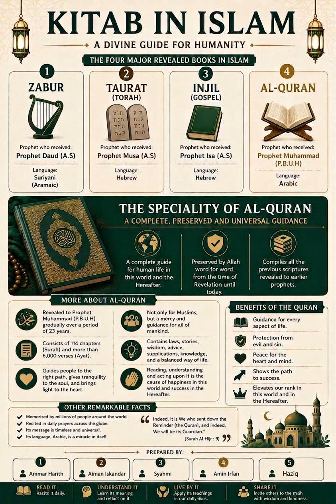

GROUP WORK
Collaboration
One of the important parts of my Usrah experience was working together with my group to complete our tasks.
Islamic Books — A Divine Guide for Humanity and attribute of Allah being All-Seeing, Al-Basir
Our group created an educational poster about the four major revealed books in Islam and a video presentation about the attribute of Allah being All-Seeing, Al-Basir.
OUR ARTWORK
Group Poster

OUR PRESENTATION
Group Video
MY CONTRIBUTION
What I Did
I participated in the preparation of our group project and worked together with my group members to complete the poster and video presentation. Through this collaboration, I contributed to the completion of our shared tasks and supported the group throughout the project.
MY EXPERIENCE
What I Learned
From the poster, I learned about the four major revealed books in Islam: Taurat, Zabur, Injil and Al-Quran. I also learned more about the special importance of the Al-Quran as the final revealed book and a complete guide for humanity.From the video, I learned about Allah being All-Seeing (Al-Basir), which reminded me that Allah sees everything we do. Therefore, I should always be mindful of my actions and try to do what is right, even when no one else is watching.